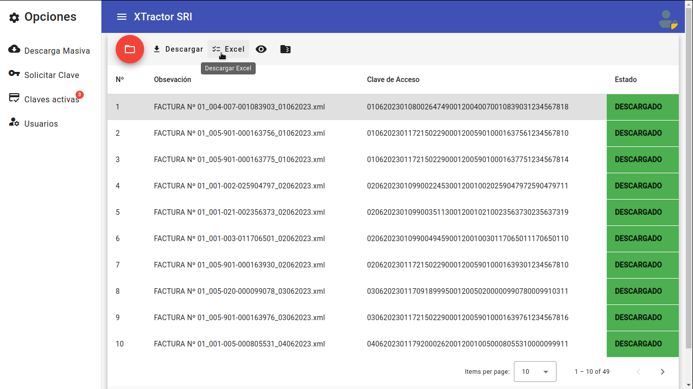

Información
Plataforma XTractor SRI.

Plataforma XTractor SRI.
Somos conscientes de los requerimientos tecnológicos actuales y de la necesidad de innovación contínua y agilidad de procesos. Por tal motivo muchos profesionales abordan su transformación digital con nuestra plataforma XTractor SRI.
XTractor SRI es una plataforma de Descarga Masiva de Comprobantes Electrónicos emitidos en Ecuador, gracias a altos estándares de calidad XTractor SRI es un sistema robusto y confiable.
Nuestros servicios trabajan con conexión directa al SRI, por lo que realizamos consultas de manera directa y sin intermediarios, agilizando los procesos de descarga, extracción y generación de informes.
Nuestros diseños tanto de front-end como de back-end son inéditos y propios, no contienen partes de codigo de terceros con lo que aseguramos la calidad de nuestro software.
Solicitar servicio